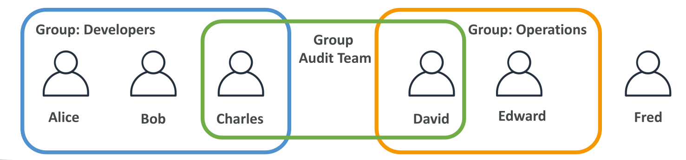
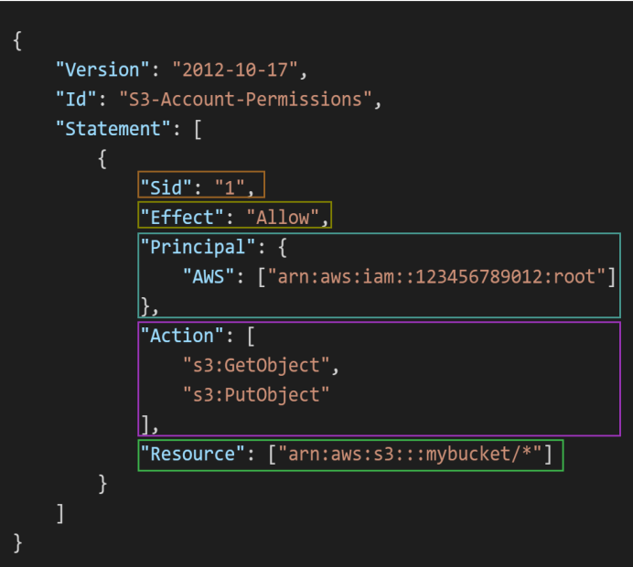

Explaining things in simple language is often a difficult task, so let’s understand this with a simple example. Imagine you buy a computer and install a new operating system. During the installation process, you are asked to create a user. This user is typically the root or admin user, which has full privileges to perform all operations.
Now, suppose you have a sibling who also wants to use your computer, but you are concerned about giving them full access. Instead of sharing the admin account, you create another user with limited permissions perhaps access only to certain files or applications.
This is exactly what IAM (Identity and Access Management) in AWS does. You create IAM users using your root account and assign specific permissions so that they do not have the same level of access as the root user. These permissions are defined using policies, which are JSON documents. You can create these policies either through the AWS Management Console visually or by using a JSON editor.

You can also add IAM users to groups and assign common permissions to those groups. This makes permission management easier and more scalable.
Keep in mind:
Below is an example of how a typical IAM policy looks in JSON format:

It is always recommended to use a strong password and secure your account with MFA (Multi-Factor Authentication). You can use any authenticator app or a supported hardware device. For example, you can use Google Authenticator, but you are free to choose any option that suits you.
In simple terms, an IAM role is used to grant permissions to AWS services so they can perform specific tasks securely without exposing access keys.
For example, suppose you launch an EC2 (Elastic Compute Cloud) instance. If you try to access AWS services from that instance without proper permissions, access will be denied unless you configure credentials (such as access keys). However, storing or exposing access keys can be risky, especially in production environments with sensitive applications.
A better approach is to create an IAM role and attach it to the EC2 instance. The instance will automatically assume the role and obtain temporary credentials, allowing it to perform only the actions permitted by the attached policies without exposing any sensitive credentials.
--- If you want, I can also make it more beginner-friendly, add diagrams explanations, or optimize it for SEO.